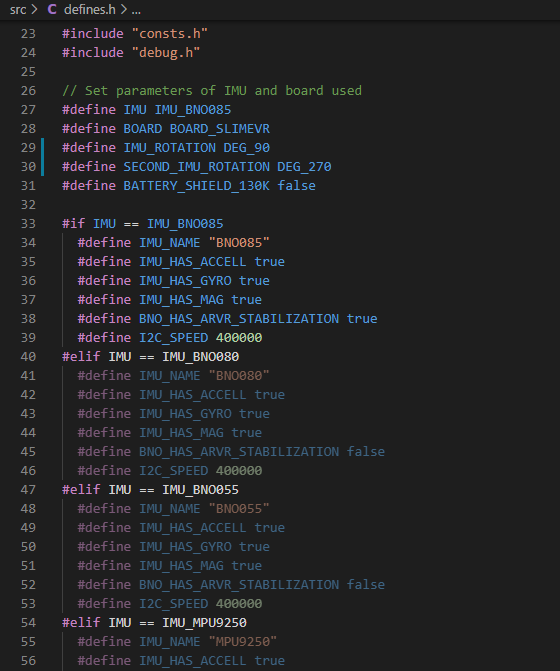
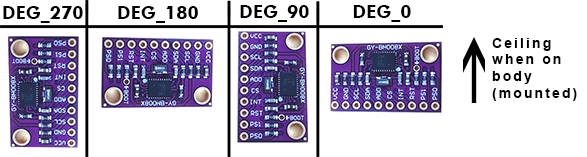

Configuring the Firmware Project
In order to build SlimeVR firmware and upload it to your tracker, you need to configure the project to match your specific hardware configuration. To do this, you need to modify two files: platformio.ini and defines.h.
Table of Contents
1. Configuring platformio.ini
The platformio.ini file specifies the information about your MCU.
This file can be found in the root directory of the project:

The contents of platformio.ini file should look as follows:

Select Your Hardware Settings
Monitor Speed
This field set your serial monitor speed in VSCode monitor_speed = 115200. Change this if your board datasheet and documentation suggest so, but the defaults should work.
For the platform and board fields, visit PlatformIO Boards documentation and find your board there. If it's not there, keep default ones or ask on SlimeVR Discord.
env
Important: Other env lines must be commented out with preceding semicolon (
;) character.
If you're using a board with an ESP8266, uncomment the following lines:
[env:esp12e]
platform = espressif8266
board = esp12e
If you're using a board with an ESP32, uncomment the following lines:
[env:esp32]
platform = espressif32
board = esp32dev
WiFi
If you're having problems with setting the wifi credentials through the server, you can hardcode your wifi credentials to firmware.
To hardcode your wifi credentials, uncomment the following lines and replace SSID and PASSWORD with your corresponding wifi credentials:
-DWIFI_CREDS_SSID='"SSID"'
-DWIFI_CREDS_PASSWD='"PASSWORD"'
If you are having problems getting the tracker to connect to your Wi-Fi, review these troubleshooting steps:
- If your wifi password contains the
%character, replace it with%%. - If your network SSID contains non-alphanumerical characters, the tracker could fail to connect
- The ESP8266 and ESP32 only support 2.4GHz network bands.
2. Configuring defines.h
The defines.h file specifies the information about your IMU and MCU.
This file can be found in the src directory of the project:

You can either edit the defines.h file manually or use the tool below to generate the contents of the file.
Configuring defines.h Automatically
Select how you built your SlimeVR tracker:
After selecting the settings above, you can either:
- Use the download button below and replace your defines.h file.
- Copy and paste from the text field below into your IDE (such as VSCode).
If you have used the above tool, you are finished with the defines.h file.
Configuring defines.h Manually
You can also configure the defines.h file manually instead of using the tool above. Before any changes to the file, the contents of defines.h file should look as follows:

Select Your Hardware Settings
First you need to change these lines to define your IMU model and MCU:
// Set parameters of IMU and board used
#define IMU IMU_BNO085
#define BOARD BOARD_SLIMEVR
#define IMU_ROTATION DEG_90
#define SECOND_IMU_ROTATION DEG_270
#define BATTERY_SHIELD_130K false
Change the IMU Model
The following line defines which IMU is present:
#define IMU IMU_BNO085
To change IMU model, replace IMU_BNO085 with one of the following values depending on your IMU model:
IMU_BNO080
IMU_BNO055
IMU_MPU9250
IMU_MPU6500
IMU_MPU6050
IMU_BNO086
IMU_ICM20948
IMU_BMI160
If you're using an MPU+QMC5883L, you would set your IMU as IMU_MPU9250. Bear in mind, you need to be using the QMC firmware for this to work, as the main firmware does not support the MPU+QMC5883L.
Change Board Model
The following line defines which MCU board is present:
#define BOARD BOARD_SLIMEVR
To change the board model, you must replace BOARD_SLIMEVR with one of the possible values:
- For most boards with ESP8266, set it to
BOARD_NODEMCU. For Wemos D1 Mini, you can useBOARD_WEMOSD1MINI. - For boards with ESP32, set it to
BOARD_WROOM32. - For other boards that don't follow the pinouts of any defined board, set it to
BOARD_CUSTOMand define the pins yourself.
Adjust IMU Board Rotation
The following lines define the rotation of your IMU boards:
#define IMU_ROTATION DEG_90
#define SECOND_IMU_ROTATION DEG_270
To change the IMU board rotation, replace DEG_90 (and DEG_270 if you have auxiliary IMU) with one of the following values. Top of this picture is the ceiling (or your head) and IMU facing away from you when mounted on the body.

Set Battery Monitoring Options
The following lines define how battery voltage is read:
#define BATTERY_MONITOR BAT_EXTERNAL
#define BATTERY_SHIELD_RESISTANCE 180
If you don't have a 180 kOhm resistor for checking the battery percentage of your tracker, replace BAT_EXTERNAL with BAT_INTERNAL. When set to BAT_INTERNAL the tracker will only be able to tell when the battery is low, and will cause the LED on the microcontroller to flash repeatedly. If you have a 180 kOhm resistor you do not need to change BAT_EXTERNAL. If you have a resistor of value other than 180 kOhm, simply change 180 to whatever your resistor value is in kOhms, for instance 130 if your resistor is 130 kOhms. If you have a Wemos Battery Shield product, you would change 180 to 130 as previously mentioned.
Define Pins of the Selected Board
You need to change only the section between #elif symbols with the selected board. If you are using VSCode, selected board section will light up, while other ones will be grayed out.
Example 1:
#elif BOARD == BOARD_NODEMCU || BOARD == BOARD_WEMOSD1MINI
#define PIN_IMU_SDA D2
#define PIN_IMU_SCL D1
#define PIN_IMU_INT D5
#define PIN_IMU_INT_2 D6
#define PIN_BATTERY_LEVEL A0
#define BATTERY_SHIELD_130K true
Example 2:
#elif BOARD == BOARD_WROOM32
#define PIN_IMU_SDA 21
#define PIN_IMU_SCL 22
#define PIN_IMU_INT 23
#define PIN_IMU_INT_2 25
#define PIN_BATTERY_LEVEL 36
#define BATTERY_SHIELD_130K true
Example 3:
#elif BOARD == BOARD_CUSTOM
// Define pins by the examples above
#define PIN_IMU_SDA 5
#define PIN_IMU_SCL 4
#define PIN_IMU_INT 14
#define PIN_IMU_INT_2 13
#define PIN_BATTERY_LEVEL A0
SDA and SCL pin for main and AUX trackers are always the same. You can define pins either by using pin name, like D1, or by pin number, like 21. Check you board pinout for the details, or connect your tracker to the default pins, they're recommended ones.
You need to put here your selected pins for I2C. Check pinout for details in terms of which ports could be used for I2C.
#define PIN_IMU_SDA D2
#define PIN_IMU_SCL D1
If you are using BNO you need to define INT pin:
#define PIN_IMU_INT D5
If you are using the second BNO you need to define INT pin for the second BNO, it must be another pin:
#define PIN_IMU_INT_2 D6
If you are using a resistor for checking the battery level, you will need to select a pin that supports analog input:
#define PIN_BATTERY_LEVEL A0
Your firmware for your MCU and IMU configuration should now be complete!
Created by adigyran#1121 with help from Musicman247#1341, edited by NWB#5135, edited and styled by CalliePepper#0666 and Emojikage#3095